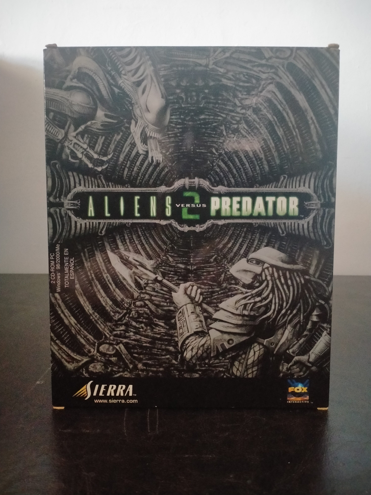

Ficha #000000
Aliens versus Predator 2
Aliens versus Predator 2 (2001) es uno de los shooters más ambiciosos y atmosféricos de su época, desarrollado por Monolith Productions tras el éxito del primer título. Basado en las icónicas franquicias cinematográficas de Alien y Predator, el juego propone una estructura única: tres campañas completamente distintas que permiten vivir la historia desde el punto de vista de un Marine colonial, un Alien y un Predator. Cada especie ofrece mecánicas radicalmente diferentes: el Marine apuesta por la supervivencia y el terror psicológico en entornos claustrofóbicos; el Alien se mueve con agilidad extrema por paredes y techos, acechando a sus presas; y el Predator combina sigilo, tecnología avanzada y combate cuerpo a cuerpo. Esta asimetría jugable fue uno de los grandes logros del título, elevando su profundidad y rejugabilidad. Técnicamente, el juego utilizaba el motor LithTech, destacando por su iluminación dinámica, diseño sonoro inmersivo y una ambientación opresiva que capturaba perfectamente el espíritu de las películas. Además, su modo multijugador fue muy popular, con partidas online donde las tres especies se enfrentaban en combates desequilibrados pero intensos. Esta edición Big Box distribuida por Sierra y Fox Interactive es especialmente representativa de la época dorada del PC, con arte oscuro y detallado que refleja la biomecánica de los xenomorfos y el diseño tribal del Predator. Hoy en día, es una pieza muy valorada tanto por coleccionistas como por aficionados al género FPS clásico.
- Formato
- Big Box
- Plataforma
- Win95 Win98 WinMe Win2000 WinXP
- Género
- FPS Acción Ciencia ficción Terror
- Serie
- Big Box Todos
- Desarrollador
- Monolith Productions
- Distribuidor
- Sierra Entertainment, Fox Interactive
- EAN
- —
Contenido de la edición
- Caja Big Box original
- CD-ROM del juego
- Manual
- Folleto promocional
- Tarjeta o documentación adicional
Preservación
- Protección
- Código o clave
- Formato recomendado
- BIN/CUE
- Jugable en virtualización
- Sí
Requiere clave de CD para instalación y verificación del disco para ejecución. Preservable mediante imagen de disco y parche No-CD.